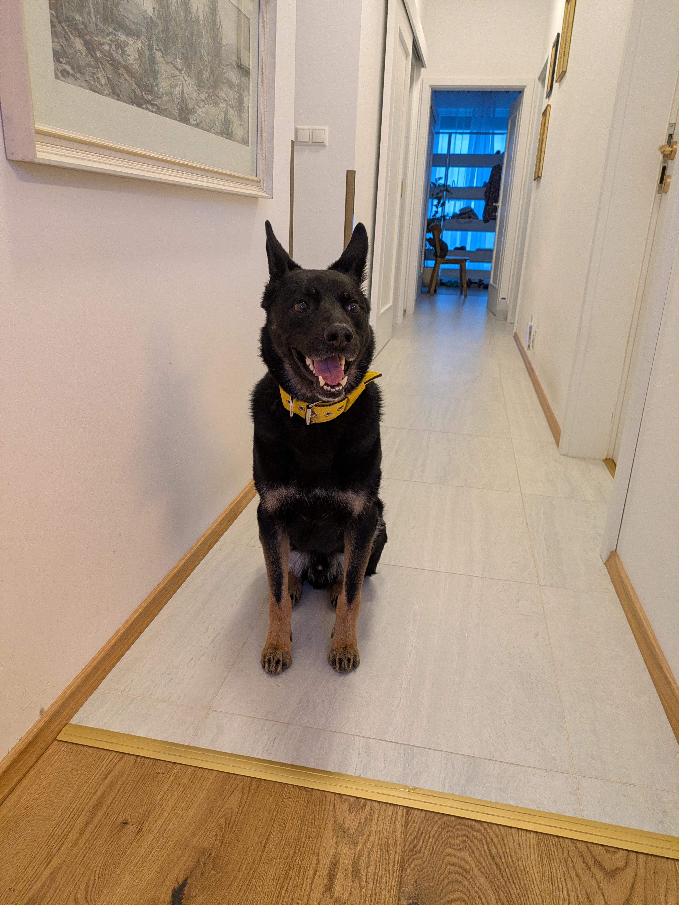
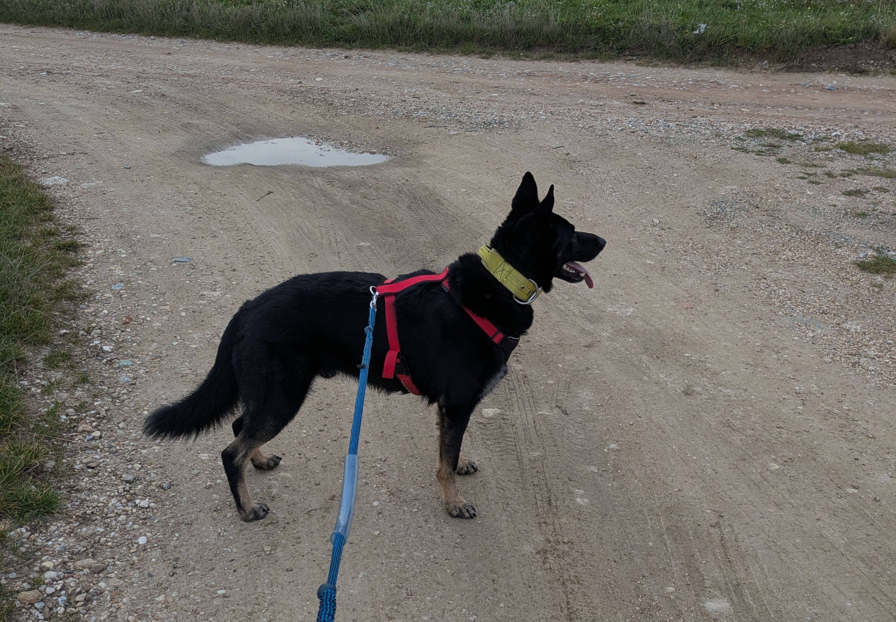
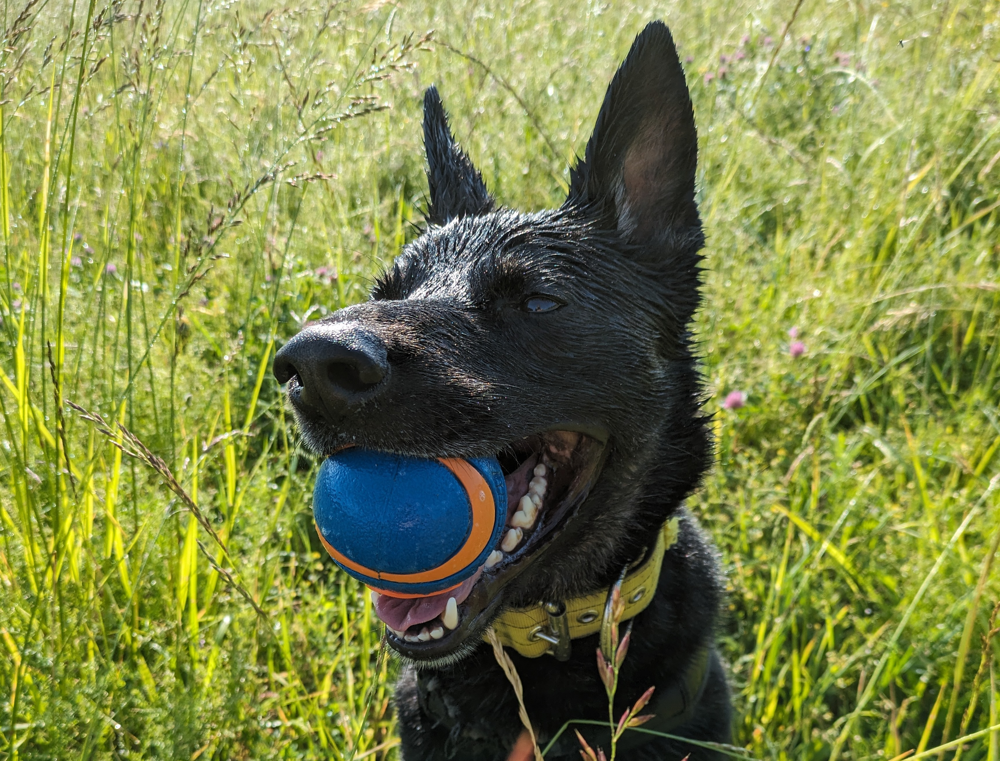
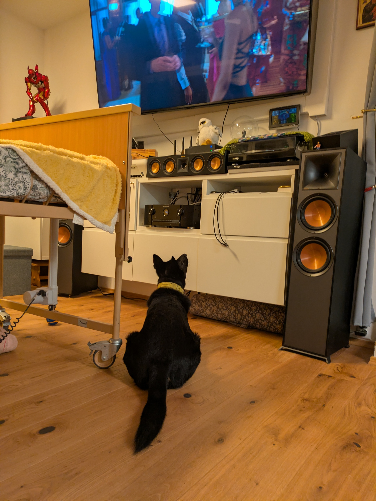

Vitaj, volám sa Porthos
Čierny vlčiak, zachránený, potom v útulku, a potom doma. Reaktívny a plný lásky zároveň.
Spoznaj ma bližšieO Porthosovi

Kto som?
Volám sa Porthos a som čierny vlčiak bez rodokmeňa. Našli ma spolu s ďalšími psíkmi. Boli sme priviazaní na krátkych reťaziach, ani neviem kde to bolo, ale nemali sme tam ani vodu, ani jedlo. Keď nás odtiaľ brali, vonku bolo -17°C. V útulku som pobudol asi mesiac a potom som išiel domov. Nič som nepoznal a všetko ma vyrušovalo. Snažil som sa urobiť tam poriadky s kávovarom, ľuďmi za dverami, telefónmi, dokonca aj s tým psom, ktorý na mňa pozeral zo steny a hýbal sa. Vraj zrkadlo.
Som reaktívny pes. Na niektoré podnety reagujem intenzívnejšie. Iné psy, cudzí ľudia alebo hlučné prostredie ma dokážu vyviesť z miery. Potrebujem čas, priestor a hlavne trpezlivosť. Moja gazdinka mi to dopraje, ale niekedy na mňa aj kričí, že Psisko, sa mi to páči viac ako Porthos a ja potom poslúcham.
K ľuďom ktorých poznám som veľmi priateľský a láskavý. Nosím im loptičky, alebo iba tak hľadím na to, čo robia. Milujem prechádzky v prírode, behanie po lese, rád plním príkazy za odmenky a zo všetkého najradšej mám také dve malé dievčatá, ktoré ku nám chodievajú. Učili ma čítať aj prekračovať detské prekážky. Najviac sa im páči keď vo vzduchu chytám hodenú granulku alebo keď za granulkou utekám po chodbe a potom v správnej chvíli zabrzdím a došmýkam sa až na miesto. Mám to prepočítané aby som nikde nenabúral.
Čítaj môj príbehGaléria
Pár faktov o mne

Čierny vlčiak
Nemecký ovčiak je inteligentné, lojálne a energické plemeno. Potrebuje veľa pohybu, mentálnej stimulácie a dôsledný ale láskyplný prístup. Nie je to pes pre každého, keď si ho získaš, máš priateľa na celý život.

Reaktívny ale láskavý
Reaktivita nie je agresivita. Porthos reaguje intenzívne na niektoré podnety, ale k ľuďom ktorých pozná je nežný, hravý a oddaný. Každý deň robí pokroky vďaka trpezlivosti a pozitívnemu výcviku.

Príroda a pohyb
Porthos miluje dlhé prechádzky v lese, behanie a čuchanie každého zaujímavého miesta. Ale pomáha aj v starostlivosti o dve bezvládne osoby, svojou láskou, prirodzeným beťárstvom a certifikovanou loptičkovou terapiou. Najlepší deň? Ráno v lese, cez deň dohľad nad domácnosťou a večer vo svojom kresle.
Máš reaktívneho psa?
Viem aké to je, každá prechádzka je výzva. Individuálny tréning s trénerom najlepšie pozitív metódou je nevyhnutný aby ste sa navzájom pochopili.
Kontaktuj nás